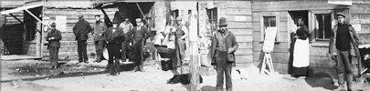
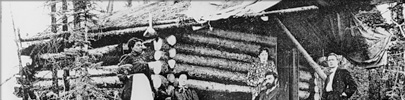
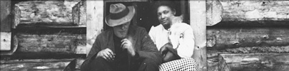

Peu de femmes s’étaient jointes aux hordes montées à l’assaut du Klondike durant la ruée vers l’or, et encore moins des femmes noires.
À part dans les cabarets, il y avait peu d’emplois pour les femmes dans ces années-là, mais les femmes noires ont réussi à trouver d’autres sources de revenu, soit comme boulangères, couturières, domestiques, ouvrières dans les mines, voire propriétaires d’entreprise.
« Je n’ai jamais entendu parler de madame Hunter sans que ce soit avec le plus grand respect. »
Lucille Hunter
En 1897, Charles Hunter et son épouse Lucille, alors âgée de seulement 19 ans et enceinte de quelques mois, quittaient les États-Unis à destination du Klondike. Ils sont passés par la piste Stikine, une des voies d’accès au Yukon parmi les plus ardues. Ils se sont arrêtés à Teslin le temps que Lucille donne naissance à leur fille, baptisée Teslin pour commémorer le moment, avant de poursuivre leur route jusqu’à Dawson.
Arrivés à destination bien avant le gros des hordes, ils avaient déjà jalonné une concession au ruisseau Bonanza en février 1898. Ils se sont établis à Grand Forks, au confluent des ruisseaux Bonanza et Eldorado, où ils ont vécu plusieurs années.
Après la mort de Charles, survenue en 1939, Lucille continua à exploiter les mines d’or qu’elle possédait à Dawson, ainsi que les gisements d’argent établis à leur nom à Mayo, couvrant chaque année à pied, aller-retour, les 200 km et plus qui séparaient Mayo de Dawson.
En 1943, elle déménagea à Whitehorse, où elle ouvrit une buanderie. Elle resta farouchement indépendante jusqu’à la fin de sa vie, même après avoir complètement perdu la vue.
(ci-dessus)
Photo prise le 17 septembre 1914. Dix ans plus tard, la population du Yukon ne comptait plus que 4 157 personnes, dont 6 personnes de couleur.
Archives du Yukon, collection Margretta Gaundrove, 82/219, nº 59

Lucille Hunter, chez elle, à Whitehorse, 1960. Elle est morte le 10 juin 1972, à l’âge de 93 ans.
Archives du Yukon, fonds Richard Harrington, 79/29, nº 277

Teslin Hunter, en arrière, avec (en avant, de gauche à droite) Grace et Irene Murray, Alice Williams et leur professeure, madame Clark, à leur départ pour un pique-nique, Grand Forks, 1911.
Archives du Yukon, fonds Grace McBride, 90/02, nº 13

Buster Hunter, petit-fils de Lucille et Charles Hunter, à la pêche sur la glace, vers 1935.
Archives du Yukon, fonds R. Butterworth, 85/84, nº 9546
Rue Front, au nord de la rue Harper, à Dawson, vers 1898.
© Musée canadien des civilisations, E.A. Hegg, nº J6246
Femme noire inconnue, Iola Beebe, Bera Beebe, Swiftwater Bill Gates et un homme inconnu devant la cabane de Gates au ruisseau Quartz.
Bibliothèque et Archives Canada / C-014550

Lillian Mabel Taylor a vécu au ruisseau Livingstone et à Whitehorse de 1902 à 1913. Elle a travaillé comme cuisinière et blanchisseuse, en plus d’exploiter des concessions minières.
Archives du Yukon, collection Eva Stehelin, 2002/53, nº 1
Photo reproduite avec la gracieuse permission de Parcs Canada, collection Anita Johns, nº 250